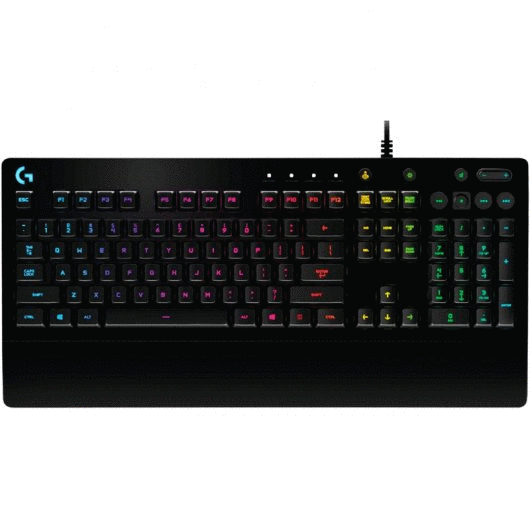
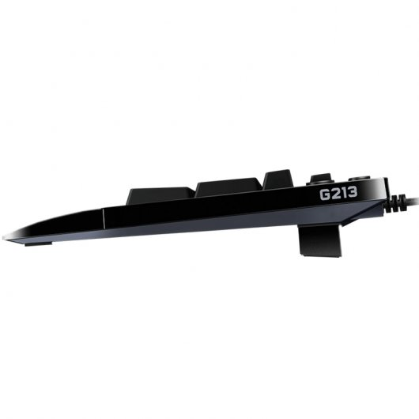
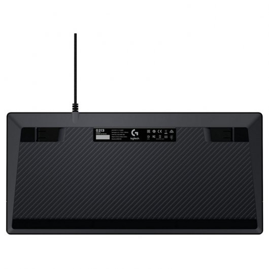
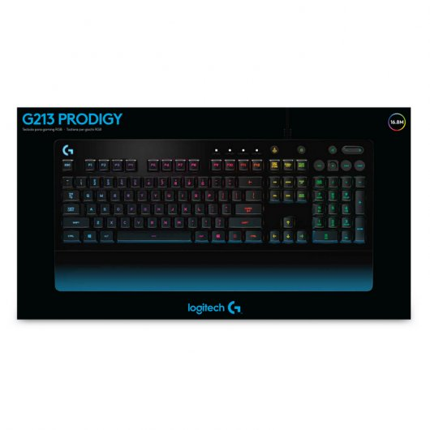
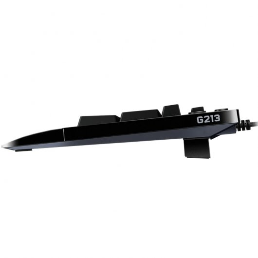
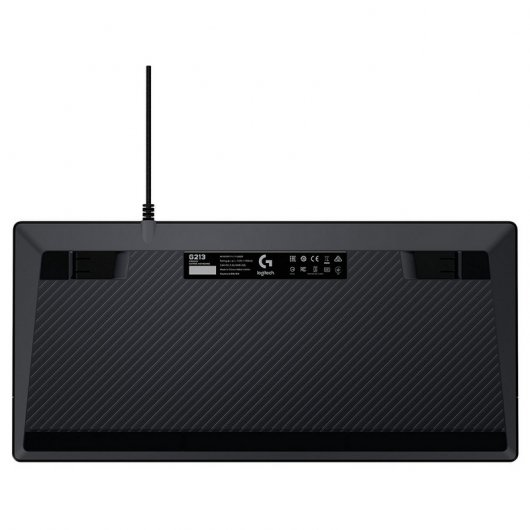
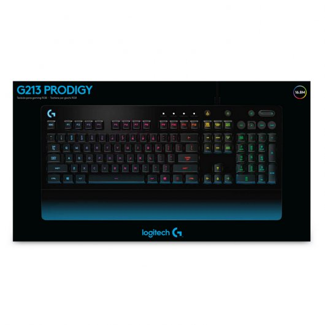

FUTURETECH STORE |

 





|
Logitech G213 Prodigy
59,99€
Te presentamos el Teclado Gaming G213 Prodigy de Logitech, un teclado con iluminación RGB.
Características
Uso simultáneo de teclas para mayor rendimiento. Cuatro veces más rápido que los teclados estándar. Cada tecla de G213 está optimizada para mejorar la experiencia táctil y ofrecer una respuesta superrápida, hasta 4 veces superior a la de los teclados estándar. La matriz de prevención de efecto fantasma para juegos está programada para dominar el control al pulsar simultáneamente varias teclas de juego.
Zonas de iluminación RGB brillantes y nítidas. Elige entre 16,8 millones de colores. Añade un toque personal con cinco zonas de iluminación individuales con un espectro de hasta 16,8 millones de colores. Cambia colores según una configuración o un juego específico o simplemente para usar tus favoritos. El bajo índice de fuga luminosa alrededor de las teclas significa que pasa más luz por las letras, con lo que cada tecla es más brillante y más fácil de encontrar.Se requiere Logitech Gaming Software para personalizar ajustes de perfil.
Resistente a salpicaduras y duradero. Diseñado para la vida de verdad. Los accidentes ocurren, por eso G213 Prodigy se ha creado para la vida de verdad. No importa si estás jugando o trabajando, G213 Prodigy lo aguanta todo, con una construcción duradera que resiste salpicaduras*, migas y suciedad para que los accidentes del mundo real no se interpongan en el camino. *Sometido a pruebas con derrames de 60 ml de líquido.
Reposamanos integrado y patas ajustables. Juega más tiempo. El ajuste de ángulo en dos niveles te permite colocar el teclado en la posición ideal, mientras el reposamanos integrado alivia la incomodidad o la fatiga, para que puedas seguir jugando cómodamente ronda tras ronda.
Controles multimedia específicos. Reproducir, pausa, omitir, ajustar. Controla tu pista de fondo sin detener la acción. G213 posee controles multimedia específicos que se pueden usar para reproducir, poner en pausa y silenciar música y vídeos al instante. Ajusta el volumen o salta a la siguiente canción con sólo pulsar un botón. Personaliza con Logitech Gaming Software. Simplifica tu juego. Logitech Gaming Software permite personalizar G213, para un uso más práctico y exclusivo. Puedes configurar la iluminación RGB, ahorrar tiempo asignando varias funciones a ciertas teclas y mucho más.
Especificaciones
Requisitos del sistema
Windows® 10, Windows 8.1, Windows 8, Windows 7
Puerto USB
Conexión a Internet para descarga de software opcional
Contenido de la caja
Teclado para gaming
Documentación del usuario
Especificaciones técnicas
Resistente a salpicaduras: Sometido a pruebas con derrames de 60 ml de líquido
Tipo de conexión: USB 2.0
Protocolo USB: USB 2.0
Velocidad USB: Máxima
Indicadores luminosos (LED): Sí
Pantalla LCD: No
Retroiluminación: RGB
Longitud de cable (alimentación/carga): 1,8 m
Especificaciones físicas
Altura: 218 mm
Anchura: 452 mm
Profundidad: 33 mm
Peso: 1000 g
|


{kind=link}
{kind=link}
{kind=link}